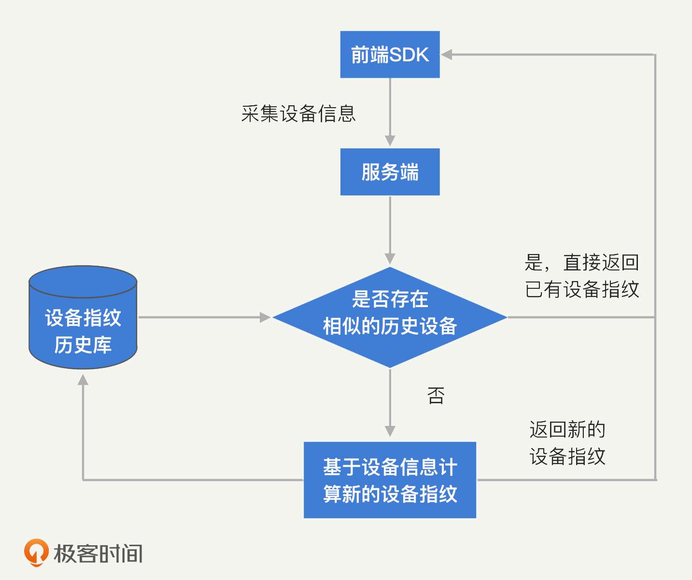

- 00 开篇词 别说你没被安全困扰过.md.html
- 01 安全的本质：数据被窃取后，你能意识到问题来源吗？.md.html
- 02 安全原则：我们应该如何上手解决安全问题？.md.html
- 03 密码学基础：如何让你的密码变得“不可见”？.md.html
- 04 身份认证：除了账号密码，我们还能怎么做身份认证？.md.html
- 05 访问控制：如何选取一个合适的数据保护方案？.md.html
- 06 XSS：当你“被发送”了一条微博时，到底发生了什么？.md.html
- 07 SQL注入：明明设置了强密码，为什么还会被别人登录？.md.html
- 08 CSRF_SSRF：为什么避免了XSS，还是“被发送”了一条微博？.md.html
- 09 反序列化漏洞：使用了编译型语言，为什么还是会被注入？.md.html
- 10 信息泄露：为什么黑客会知道你的代码逻辑？.md.html
- 11 插件漏洞：我的代码看起来很安全，为什么还会出现漏洞？.md.html
- 13 Linux系统安全：多人共用服务器，如何防止别人干“坏事”？.md.html
- 14 网络安全：和别人共用Wi-Fi时，你的信息会被窃取吗？.md.html
- 15 Docker安全：在虚拟的环境中，就不用考虑安全了吗？.md.html
- 16 数据库安全：数据库中的数据是如何被黑客拖取的？.md.html
- 17 分布式安全：上百个分布式节点，不会出现“内奸”吗？.md.html
- 18 安全标准和框架：怎样依“葫芦”画出好“瓢”？.md.html
- 19 防火墙：如何和黑客“划清界限”？.md.html
- 20 WAF：如何为漏洞百出的Web应用保驾护航？.md.html
- 21 IDS：当黑客绕过了防火墙，你该如何发现？.md.html
- 22 RASP：写规则写得烦了？尝试一下更底层的IDS.md.html
- 23 SIEM：一个人管理好几个安全工具，如何高效运营？.md.html
- 24 SDL：怎样才能写出更“安全”的代码？.md.html
- 25 业务安全体系：对比基础安全，业务安全有哪些不同？.md.html
- 26 产品安全方案：如何降低业务对黑灰产的诱惑？.md.html
- 27 风控系统：如何从海量业务数据中，挖掘黑灰产？.md.html
- 28 机器学习：如何教会机器识别黑灰产？.md.html
- 29 设备指纹：面对各种虚拟设备，如何进行对抗？.md.html
- 30 安全运营：“黑灰产”打了又来，如何正确处置？.md.html
- 加餐1 数据安全：如何防止内部员工泄露商业机密？.md.html
- 加餐2 前端安全：如何打造一个可信的前端环境？.md.html
- 加餐3 职业发展：应聘安全工程师，我需要注意什么？.md.html
- 加餐4 个人成长：学习安全，哪些资源我必须要知道？.md.html
- 加餐5 安全新技术：IoT、IPv6、区块链中的安全新问题.md.html
- 模块串讲（一）Web安全：如何评估用户数据和资产数据面临的威胁？.md.html
- 模块串讲（三）安全防御工具：如何选择和规划公司的安全防御体系？.md.html
- 模块串讲（二）Linux系统和应用安全：如何大范围提高平台安全性？.md.html
- 结束语 在与黑客的战役中，我们都是盟友！.md.html
- 捐赠
29 设备指纹：面对各种虚拟设备，如何进行对抗？
你好，我是何为舟。
有一句话说“数据和特征决定了机器学习的上限，而模型和算法只是逼近这个上限而已”。这句话在风控系统中同样适用，因为风控系统本质上也是一个大数据分析系统。所以，收集更多的数据是提升风控能力的一项核心工作。
随着手机和人的关系越来越紧密，通过手机对用户行为进行追踪和判定的方法，已经成为风控系统中识别黑产的主要手段。设备指纹是用来标识手机或者浏览器的唯一ID，我们能够通过这个ID关联到手机或浏览器相关的全部数据。因此设备指纹是风控系统中最核心的数据来源。
那设备指纹是如何对手机进行追踪的？又是如何判定异常行为的呢？今天，我们就一起来探讨一下，应该如何设计和实现设备指纹。
设备指纹的优势
对比于传统的IP、手机号等ID，设备指纹具有唯一性高、稳定性强和信息丰富这三个优势。
简单来说，唯一性高是指一人一设备，因为使用者不同，每个智能设备上的使用痕迹和特征也具有唯一性。稳定性强也很好理解，就是智能设备的硬件不常更新，它们对应稳定不变的ID。这两个优势，让我们能通过识别智能设备找到唯一对应的人，以及在较长时间内保持对他的识别。最后，智能设备能够收集的信息非常丰富，自下而上包括硬件、操作系统、应用信息等。
基于这些优势，一方面，设备指纹可以以设备为单位对其相关的行为进行串联，发现诸如使用一个设备进行大规模注册等黑产攻击行为；另一方面，设备指纹可以基于其丰富的设备信息，来识别黑产使用的虚拟设备，帮助风控系统对抗黑产。
设备指纹面临的主要挑战
文章开头我们说过，我们要设计和实现设备指纹。那你可能会问，Android和iOS都已经内置了用来追踪设备的ID，比如IDFA（Identifier For Advertising），我们为什么还要自己去实现设备指纹呢？在解答这个问题之前，我首先来讲一下设备指纹技术面临的主要挑战。通过这些挑战，你就能够明白内置的ID存在哪些问题，为什么无法满足风控系统的需求了。
第一，设备重置之后，保持设备指纹不变。
恢复出厂设置是所有智能设备的标配功能，设备重置之后，系统自带的设备ID必然会发生变化，理论上来说就是“新设备”了。
所以，如果只是使用系统自带的设备ID，黑产完全可以通过不断恢复出厂设置模拟大量的设备，来绕过风控系统的检测。因此，如何在恢复出厂设置的情况下，仍然保持设备指纹的稳定不变，是设备指纹技术的主要挑战之一。
第二，设备更新之后，保持设备指纹不变。
既然无法直接使用自带的设备ID，那我们就必须基于各类设备信息综合计算出设备指纹。但是，我们平时在使用智能设备的时候，不仅会有意或无意地变更设备名称、网络环境、位置等信息，还会更新操作系统，系统版本、应用版本等特征也会随之改变。这都会影响到设备指纹的计算。
知道了设备更新能影响设备指纹的计算，黑产在进行欺诈行为的时候会更加极端，它们会更换部分硬件去尝试伪造新的设备，比如，摄像头、音响等相对容易拆卸安装的部分。因此，如何在一定程度上兼容设备的变动和更新，也是设备指纹需要考虑的问题之一。
总之，黑产总是会尝试去修改虚拟设备的各类配置，将其伪造成新的设备，从而绕过风控系统的检测。因此，一个稳定的设备指纹可以帮助风控系统对抗黑产的虚拟设备。
上面说的这两个挑战都属于设备指纹对稳定性的要求。最后，我们还要保证设备指纹的唯一性，避免两个不同的设备产生相同的设备指纹，比如，如何准确地区分同型号的设备，也是设备指纹需要满足的要求之一。所以，唯一性是避免误伤真实用户的关键维度。
设备指纹的信息采集
通过上述的挑战我们可以看到，不同类型的信息能够满足不同的诉求，比如：iOS中的IDFA或者Android中的IMEI可以解决环境变更的问题，但是无法解决重置的问题；而硬件特征可以解决重置的问题，但是面对多个同型号设备，可能无法准确区分。
因此，想要获得准确且稳定的设备指纹，我们必须从多个维度采集不同的信息。这些信息可以大致分为：软件ID、软件静态特征、硬件静态特征和硬件动态特征。下面，我就和你一起来探讨一下这些信息的特点和重要性。
第一，软件ID。
软件ID主要包括iOS设备的IDFA、IDFV，Android设备的IMEI、MAC等。这些ID本身就是苹果和Google为了给APP厂商提供追踪能力设计的标识，具备较好的唯一性和稳定性。
但是，操作系统为了保障用户隐私，对APP的权限做了较多的限制。比如，用户可以自主选择禁止APP获取到这些ID，重置手机也会同时重置这些ID等。
而黑产也会利用这一特性，绕过APP厂商的识别策略。比如，黑产可以在苹果系统中直接设置不允许获取IDFA。这样一来，APP厂商的风控系统就没有办法通过设备维度关联黑产行为了，也就无法识别单一设备批量操作的攻击行为了。
第二，软件静态特征。
软件静态特征主要是操作系统和APP本身的各类基本信息，比如操作系统版本、手机名称、APP版本等。这些信息基本都可以通过更新或者手动配置的方式修改，因此在稳定性上表现较差。但是，这些信息能够反映出用户的个人特征，因此，它们能够对设备指纹的唯一性产生较大帮助。
比如，下图是我手机的部分状态信息，其中的每一项都能够直接或间接地代表我的部分信息。比如，我使用了一张移动卡和联通卡，我的手机型号是小米9，我开着蓝牙等。
第三，硬件静态特征。
硬件静态特征主要是设备的各类硬件信息，比如，主板、CPU、摄像头等相关型号信息。正常用户基本不会去替换设备上的各个硬件，因此硬件静态特征具备较高的稳定性。
但同一型号手机的硬件配置是一致的，所以，硬件静态特征在唯一性上相对欠缺。因此，通过硬件静态特征，我们无法很好地区分同型号的设备。
第四，硬件动态特征。
硬件动态特征是目前比较新的研究方向，它的基本原理是基于硬件的一些动态执行层产生的特征（如：加速度传感器的偏差）来识别虚拟设备。
举个例子，因为加速度传感器校准结果的不精确性，其产生的最终结果会存在一定的偏差。通过多次快速地查询加速度传感器，我们就可以模拟出同一时刻，加速度传感器返回的结果值。又因为存在机械偏差，所以这些结果值是不同的，那通过这些值，我们就可以计算出该传感器的线性偏差。
利用这样的原理，我们可以采集任何一个传感器硬件的偏差特征。比如，下图是在播放同一个音频后，不同手机的麦克风接收到的音频曲线。每一个颜色对应一个设备，可以看到不同设备之间的曲线存在较大差异，而同一设备的曲线则相对稳定。
因此，从稳定性上来说，硬件动态特征的表现还是不错的。不过由于特征区间比较窄，唯一性稍差一些，更多被用来辅助区分同型号的不同设备。
设备指纹的ID计算
在采集了各类信息之后，如何基于这些信息计算出一个正确的设备指纹，是设备指纹技术的核心挑战。由于数据的维度和数据量的大小都各有不同，因此，各个公司都需要自己设计相应的算法进行计算。下面我们来讲一下ID计算的大体思路。
首先，我们要明确设备指纹需要解决的核心问题，也就是给出两组信息，如何判定它们是不是来自同一个设备。我们来看一个例子。
下图中有三组设备数据，我们可以看到，设备信息A和设备信息B十分相似，它们的硬件信息相同，又在同一个Wi-Fi网络下，只有设备ID和SIM卡不同。这就很符合黑产的使用场景了：通过重置设备和更换SIM卡，来伪造一个新的设备和号码。
因此，我们可以判定设备信息A和设备信息B实际上属于同一个设备，应该分配相同的设备指纹。
上面的判定过程进一步抽象的话，其实就是计算两组数据的相似度，相似度越高、差异度越低，就越有可能是同一个设备。
下面，我们就来看一下，实际工作中是如何利用相似度进行判定的。
首先，新采集上来一组设备信息，我们要计算它和已有设备信息的相似度。可实现的算法有很多，简单的包括欧式距离、马氏距离、联合概率分布等，相对复杂的包括MRF（马尔可夫随机场）、BP算法（置信度传播算法）等。
其次，我们会设定一个阈值，当这两组数据的相似度达到这个值之后，就可以判定这两组设备数据本质上都是同一台设备产生的。
设定阈值的依据，就是黑产伪造新设备的2种方式：
重置设备：手机在重置后，虽然设备ID改变了，但是大部分的硬件相关信息仍然保持不变；
更新设备：如果更新系统信息，那么设备ID和硬件信息等仍然保持不变；如果替换部分硬件，那么系统信息和配置等仍然会保持不变。
最后，如果判定这两组数据属于同一台设备，我们就分配相同的设备指纹。如果属于不同的设备，我们就为新采集的数据生成新的设备指纹。设备指纹分配的流程如下图：

设备指纹对异常设备的识别
除了通过计算一个唯一ID来追踪设备，设备指纹的另一个核心任务就是对异常的设备进行识别。异常的设备可能是虚拟机，也可能是手机墙、云控等真实的设备。
我们可以从三个方面来识别异常设备。
第一，系统信息识别。
识别虚拟机最基本的方法，就是利用一些系统的默认参数，也就是系统信息来识别。下图是Android虚拟机中的部分设备信息，可以看到设备型号是x86（市面上不存在x86的安卓手机），序列号是EMULATOR开头。
因此，一旦在设备指纹中出现了这些信息，我们就能够判断当前的运行环境是一个虚拟机了。不过想要修改系统信息十分容易，因此大部分黑产都能够绕过基于系统信息识别的检测方法。
第二，硬件识别。
虚拟机和真实设备的最大区别就在于，虚拟机不存在真实的硬件设备支持。因此虚拟机在很多功能上会存在缺失。
比如：各类传感器要么缺失，要么采集的数值都是0或者某个固定值；相机功能异常，无法拍照等。这些都是常见的虚拟机硬件缺失的特征。
黑产想要绕过设备指纹基于硬件特征的检测机制，就必须在虚拟机中模拟出这些硬件的存在，这需要一定的技术成本。
第三，系统状态识别。
为了降低被风控系统识别的风险，有的黑产已经升级到使用廉价真机来攻击业务了。因为设备已经是真实设备，所以我们无法通过虚拟机的检测方式识别设备异常。但是，既然虚拟机都有特定的特征可以用来识别，那这类真实设备是否也有呢？显然是有的。
比如说，为了实现批量操控，这些设备必须插入数据线，所以它们会一直处于充电状态（如下图所示，Android虚拟机一直处于充电中），而正常用户大部分时候其实是未连接数据线的状态。
另外，这些设备的地理位置、网络环境等往往也高度相似，我们可以根据这些信息对异常的聚集现象进行挖掘。
总体来说，对异常设备的识别，是设备指纹和黑产进行直接对抗的领域。双方都在不断挖掘新的技术相互博弈：黑产在想方设法让设备看起来更加真实可信，而我们则需要不断挖掘新的特征点，找出这些设备和正常设备之间的差异。
总结
今天，我们对设备指纹技术进行了全面的讲解。
我们知道，设备指纹是风控系统中对设备实现长期追踪和异常识别的一种关键技术。
一款好的设备指纹，必须有足够高的稳定性和唯一性。也就是说，设备指纹不能够因为一台设备的小幅度变动和更新而轻易改变，也不能够同时属于两台设备。
为了实现对设备的长期追踪，我们必须采集各类设备信息，进行相似度的计算和识别；为了实现异常设备识别，我们需要对异常的系统信息、硬件信息状态和系统状态进行挖掘和分析。
另外，想要开发出一款合格的设备指纹，公司需要投入大量成本在移动安全领域中不断研究。因此，大部分的中小型公司，会选择采购安全厂商提供的设备指纹技术，而将主要的精力集中到如何去利用设备指纹采集上来的数据。
思考题
随着H5、小程序等应用的普遍落地，Web端的设备指纹技术也是目前火热的研究方向之一。你可以试着思考一下，Web环境中的设备指纹会面临哪些新的挑战和技术难点呢？为什么？
欢迎留言和我分享你的思考和疑惑，也欢迎你把文章分享给你的朋友。我们下一讲再见！
© 2019 - 2023 Liangliang Lee. Powered by gin and hexo-theme-book.